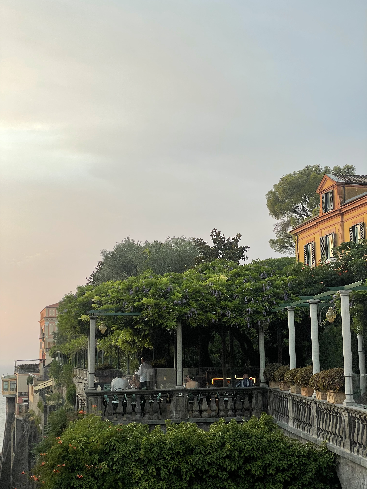
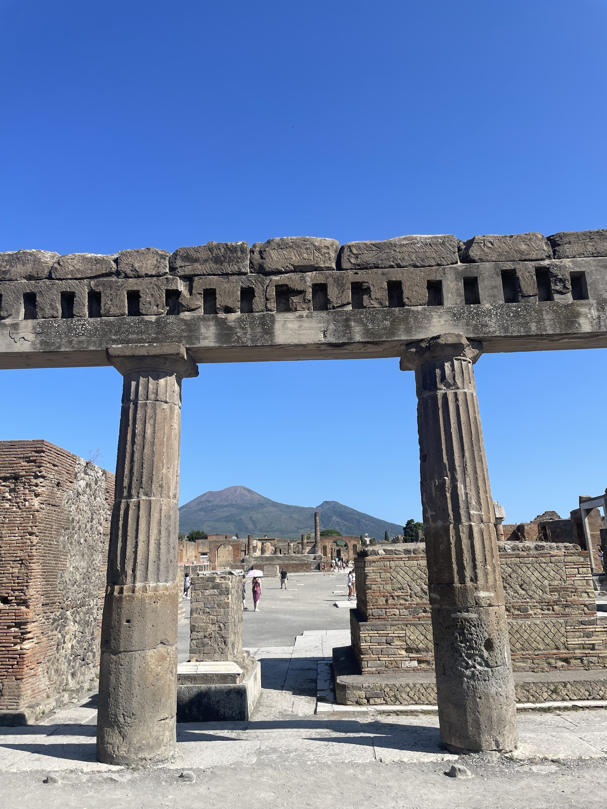
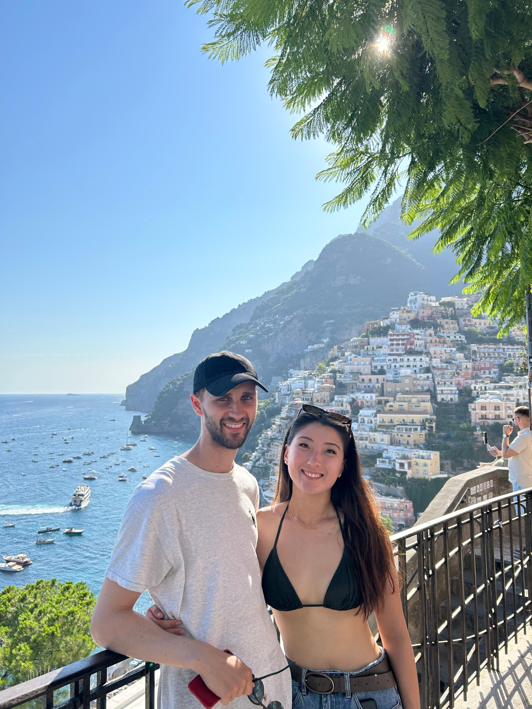
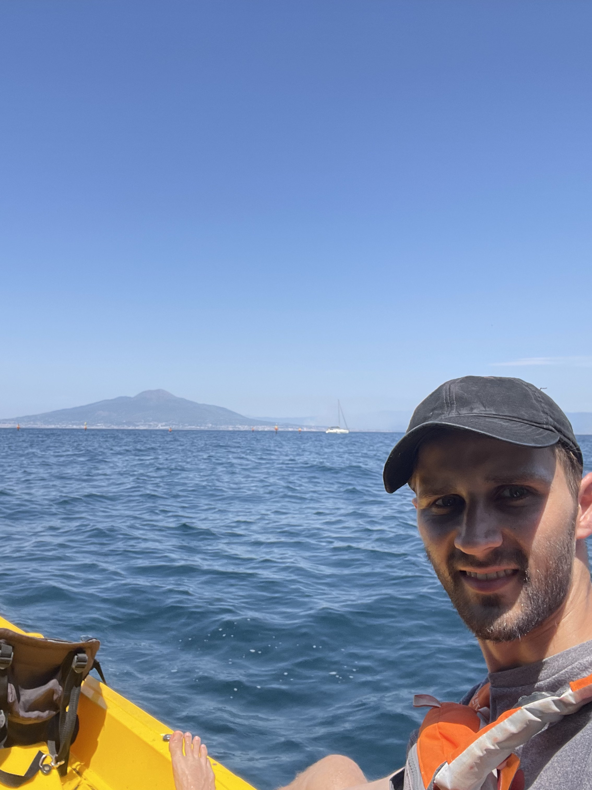

In the middle of Sophie's Euro summer, I joined her in sunny and hot Sorrento for the weekend.

17th July 2025
It was a rainy day hopping on the train to Luton airport in just shorts and a t shirt to match the weather of Naples where I would be traveling. A busy morning at work coupled with saying goodbye to Andrew meant a stressful and anxious journey. Touching down in Naples after a 2h flight I was hit with a blast of heat. I made my way on a bus to the city centre and hopped on the train to Sorrento. It was an old rickety train covered in graffiti and sweltering hot but the views of the coastline and the setting sun diverted my attention. An hour later I got off the train to see Sophie and Nat.

18th July 2025
An early start to the day where we caught the rickety train back up to Pompeii to investigate the ruins. We entered an inconspicuous set of ruins but soon came to what would have been a big courtyard in the peak of Pompeii. Framed in the background and looming high into the sky was Mt Vesuvius. We pondered the decision to build a city close to such a dangerous natural phenomenon but didn’t reach a conclusion. Through the course of several hours we explored elegant houses interspersed with functional markets and bakeries and we marveled at just how intact the city was. Closing out Pompeii we peeked into the museum where the tone was more somber and casts of humans were displayed showing the terror the eruption caused. We returned to Sorrento in time to grab some sandwiches and slushees which were delicious. A short bus trip took us up a hill where we walked round the coastline to reach a little inlet of the ocean. It was quite a busy spot but beautiful nonetheless. We waded into the inlet and were provided with entertainment of people jumping off rocks up to 15m tall. Swimming through a small arch took us to the ocean where the water was choppy! We sunbaked for a while before jumping off a smaller ledge of about 5m before heading back into town for dinner. We ate at a restaurant set amongst lemon trees.

19th July 2025
We piled onto a bus in the morning and were taken to Massa Lubrense to visit a family farm and learn about their practices. Being driven on the windy roads was an eye opener as we drove full speed into blind corners with barely space for one car with only a beep of the horn to warn oncoming cars! The fame itself was set upon the hills, terraces providing the space needed to grow a variety of fruit and vegetables. Predominantly the farmers here grew lemons and olives although here we found there was little that they didn’t have. Strawberries, kiwi to honey and chestnut trees. They even had animals; chickens, a goat, a cow, pigs and very cute cats! After touring the farm and learning about the grafting technique where they spliced together bitter orange roots to lemon tree branches to achieve more sustainable growth, we were treated to a full farm feast! Cheeses, vegetables, meat and of course pasta were served and enjoyed thoroughly. To top it all off, a shot of limoncello and lemon marmalade. Belly’s full we journeyed back but soon after set off on a ferry along the coast to Positano. We arrived into a bustling crowd and a beautiful town set against the hills. We took a quick dip into the ocean water before climbing our way through the streets to a viewpoint overlooking the city. It was an amazing atmosphere if a little crowded but after another swim it was time to head back to Sorrento and finish our night with some pizza!

20th July 2025
My last day in Sorrento started out with a customary trip to the supermarket to try local snacks and along the way we stopped off at a public garden which was covered in lemon and orange trees. We then t saw Nat off and took a walk through the narrow streets filled with fascinating shops toward the grande marina. There we found ourselves a kayak which we took out into the ocean. Promptly we turned back as the choppy waves shook our confidence. We were able to get amazing views of Sorrento and Mt Vesuvius from the ocean which was worth the partial sea sickness. We took another quick dip to cool off after the black sand had burned our feet. We had just enough time to have a quick dinner before I was off on the ferry on my journey back to London.